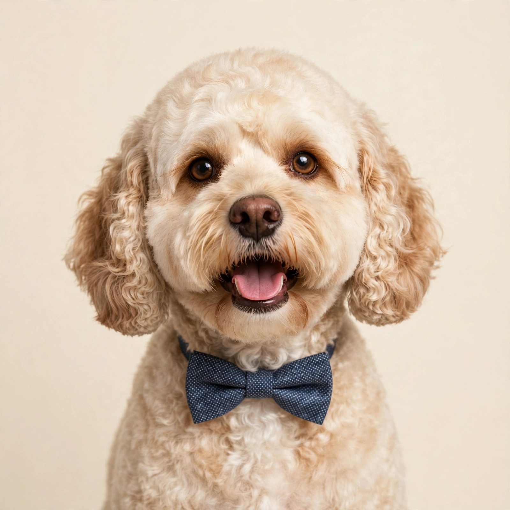
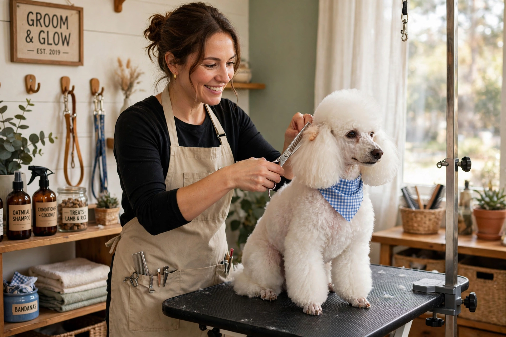
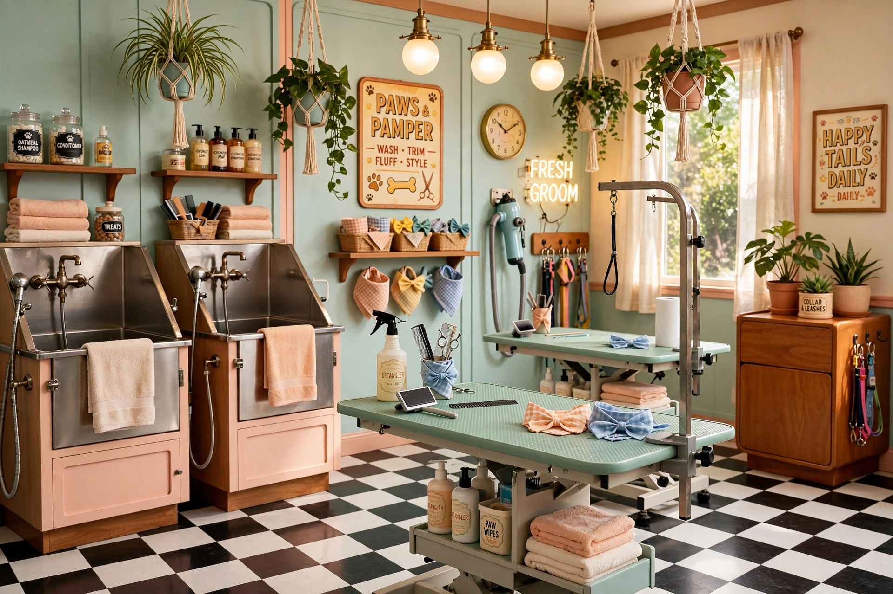

Full Groom
From £30 indicative — confirmed at booking
The complete nose-to-tail transformation: warm bath, fluff dry, full clip or scissor cut, nails, ears and finishing spritz.
Full menuPontypridd · Est. 2013
The happiest little grooming studio in Rhondda Cynon Taff — where scruffy pups walk in and superstar pets strut out. Rated 4.7 and loved by locals for over a decade.
The pamper menu
A taste of the grooming menu at 5 Bonvilston Road — every price is indicative and confirmed before we begin. The full menu, including de-shedding and tidy-up trims, is on our Services page.

From £30 indicative — confirmed at booking
The complete nose-to-tail transformation: warm bath, fluff dry, full clip or scissor cut, nails, ears and finishing spritz.
Full menu
From £20 indicative — confirmed at booking
A gentle first salon experience for pups from 12 weeks: short, sweet and treat-heavy to build happy grooming habits for life.
Full menuFrom £22 indicative — confirmed at booking
The freshen-up special: a thorough warm bath, conditioning treatment and a full fluff dry for a soft, sweet-smelling coat.
Full menuBath to finish
Every groom follows the same calm, one-on-one routine — so your pet always knows what happens next.
A warm hydro bath with a double rinse and kind-to-skin shampoo, followed by a gentle fluff dry.
Clip, scissor and style to breed standard or your own brief — just show us a photo of the look you love.
Nails clipped, ears cleaned and a finishing spritz — plus a photo for the wall of fame before the big strut home.
The full works
Our signature appointment: a warm bath, a breed-perfect cut, and all the finishing touches — the works, from nose to tail.
Puppy's first cut
Short, sweet, treat-heavy first visits that teach your puppy the salon is the best place in the world. Bath, gentle tidy and lots of fuss — the perfect start to a lifetime of good grooming.
Recommended from 12 weeks old (after vaccinations). Ask about our puppy pamper packages when you book.
Book a puppy visitFirst visit?
New to Fangface? Book by phone on 07547 780216, then drop off at 5 Bonvilston Road, Pontypridd. We groom one-on-one and give you a collection time when you arrive — a full groom usually takes 1.5–2.5 hours.
Open Tue–Fri 9am–5pm, Sat 10am–4:30pm. Closed Mondays & Sundays (even groomers need a lie-in).
Book your first visit
Fresh from the salon
Bath-time bliss, precision scissor work and wall-of-fame finishes — a peek inside the studio.
Why Fangface
Every appointment is a one-on-one pamper session. No rushed conveyor belt, no stressed pups — just patient, experienced hands and a salon that smells of coconut shampoo.
Nervous pups, first-timers and seniors all get the slow, kind treatment. We let your pet set the pace — treats included, always.
From poodle clips to spaniel feathers, we groom to breed standard or your own style brief — just show us a photo.
Quality shampoos and conditioners chosen for sensitive skin and shiny coats — never harsh, always rinsed twice.
Don't wait
Appointments fill fast — especially Saturdays. Call today and let's get your best friend booked in for a pamper.
* Walk-ins welcome when we're not booked solid — calling ahead guarantees your slot.